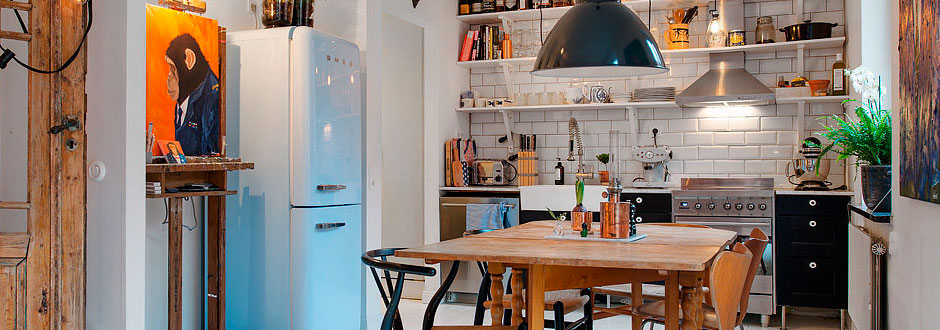

Добро пожаловать! Мы мебельная студия “Вкусная Мебель”, занимаемся продажей и изготовлением мебели с 2008 года. За плечами огромный опыт в проектировании и производстве мебели на заказ любой сложности и на любой кошелек. Наша цель сломать устоявшийся стереотип о том что стильно значит дорого. Мы стремимся к тому чтобы культура дизайна мебели и интерьера в Украине развивалась и двигалась в перед, соответствуя соременным трендам. Поэтому мы собрали для вас самые вкусные предложения, самые полезные статьи и публикации.
Добро пожаловать! Мы мебельная студия “Вкусная Мебель”, занимаемся продажей и изготовлением мебели с 2008 года. За плечами огромный опыт в проектировании и производстве мебели на заказ любой сложности и на любой кошелек. Наша цель сломать устоявшийся стереотип о том что стильно значит дорого. Мы стремимся к тому чтобы культура дизайна мебели и интерьера в Украине развивалась и двигалась в перед, соответствуя соременным трендам. Поэтому мы собрали для вас самые вкусные предложения, самые полезные статьи и публикации.
Пример Акцентного текста. Мы стремимся к тому чтобы культура дизайна мебели и интерьера в Украине развивалась и двигалась в перед, соответствуя соременным трендам. Поэтому мы собрали для вас самые вкусные предложения, самые полезные статьи и публикации.
Добро пожаловать! Мы мебельная студия “Вкусная Мебель”, занимаемся продажей и изготовлением мебели с 2008 года. За плечами огромный опыт в проектировании и производстве мебели на заказ любой сложности и на любой кошелек.
Основной отличительной особенностью шкафа-купе от обычного шкафа (с распашными дверями) являются раздвижные двери. Чаще всего шкафы-купе можно увидеть в интерьере спальни, гостиной или прихожей. За счет своей конструкции они экономят свободное пространство и позволяют хранить множество нужных вещей. Шкафы-купе бывают встроенные и корпусные.
Система раздвижных дверей для шкафа-купе может включать в себя дверную раму ( стальной или алюминиевый профиль, обрамляющий дверное полотно по периметру и придающий ему жёсткость), направляющие (треки, рельсы), ролики и некоторые другие элементы (поворотные механизмы, демпферы, упоры и пр.). В совокупности эти элементы образуют систему раздвижных дверей шкафа-купе, от качества которой зависит плавность и лёгкость хода, и в конечном итоге, срок службы изделия.
Система раздвижных дверей для шкафа-купе может включать в себя дверную раму ( стальной или алюминиевый профиль, обрамляющий дверное полотно по периметру и придающий ему жёсткость), направляющие (треки, рельсы), ролики и некоторые другие элементы (поворотные механизмы, демпферы, упоры и пр.). В совокупности эти элементы образуют систему раздвижных дверей шкафа-купе, от качества которой зависит плавность и лёгкость хода, и в конечном итоге, срок службы изделия.
Существуют системы, где ролики или упоры могут крепится к дверному полотну из натурального дерева или других материалов без металлического обрамления полотна.
Система раздвижных дверей для шкафа-купе может включать в себя дверную раму ( стальной или алюминиевый профиль, обрамляющий дверное полотно по периметру и придающий ему жёсткость), направляющие (треки, рельсы), ролики и некоторые другие элементы (поворотные механизмы, демпферы, упоры и пр.). В совокупности эти элементы образуют систему раздвижных дверей шкафа-купе, от качества которой зависит плавность и лёгкость хода, и в конечном итоге, срок службы изделия.
Существуют системы, где ролики или упоры могут крепится к дверному полотну из натурального дерева или других материалов без металлического обрамления полотна.